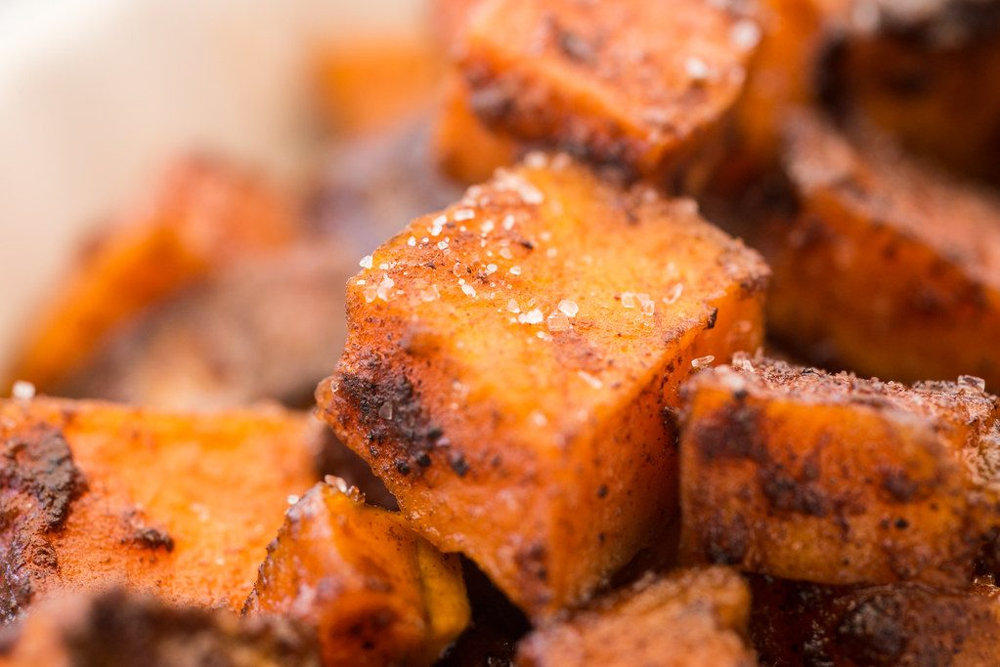
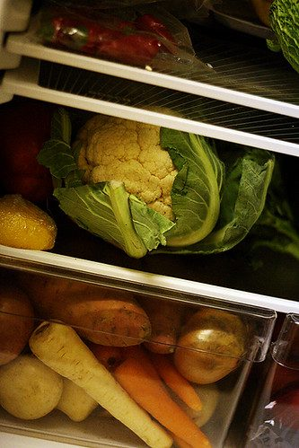

7-Day High-Protein Meal Prep Plan
About 140 g of protein a day. One 2-hour Sunday cook session. Five batch recipes, a full grocery list, and food that still tastes good on Friday.

Sunday's cook session, boxed up for the week.
How This Plan Works
Most meal prep plans fail for the same reason: they ask you to cook seven different dinners. This one doesn't. You cook five batch recipes on Sunday, and the week is built by mixing and matching them. Lunches and dinners rotate so you never eat the same meal twice in a row, and breakfast is a 5-minute assembly job you do the night before.
The daily target is roughly 140 g of protein and 1,900–2,100 calories — a solid baseline for most active adults. Scale portions up or down to fit your own targets; the structure stays the same.
The Sunday rule: if it takes more than 2 hours, it's too complicated. This plan's cook session is timed at 1 hour 50 minutes, including cleanup. Set a timer and follow the schedule below.
The Week at a Glance
Breakfast is protein overnight oats (made in 5 minutes the night before) on weekdays, and egg muffins on the weekend. Snacks are Greek yogurt with berries, or cottage cheese with fruit.
| Day | Lunch | Dinner | Protein |
|---|---|---|---|
| Monday | Sheet-pan chicken & sweet potatoes | Turkey & black bean chili | ~142 g |
| Tuesday | Turkey & black bean chili | Teriyaki chicken rice bowl | ~138 g |
| Wednesday | Sheet-pan chicken & sweet potatoes | Turkey & black bean chili | ~142 g |
| Thursday | Teriyaki chicken rice bowl | Lemon pepper chicken & quinoa | ~141 g |
| Friday | Lemon pepper chicken & quinoa | Turkey & black bean chili | ~139 g |
| Saturday | Sheet-pan chicken & sweet potatoes | Teriyaki chicken rice bowl | ~140 g |
| Sunday | Egg muffins & fruit (light day) | Fresh cook — next week's session | ~120 g |
The chicken recipes in this plan are from our 30-minute chicken meal prep collection, and breakfasts come from the breakfast meal prep guide. The two anchor recipes below — the sheet-pan chicken and the chili — are included in full here.
The Sunday Cook Session (1 hr 50 min)
Work in this order and everything finishes at once. You need one oven, one large pot, one sheet pan, and one rice cooker or saucepan.
- 0:00 — Preheat & prep. Oven to 425°F (220°C). Start the rice (4 cups dry). Dice onions, peppers, and sweet potatoes; cut the broccoli.
- 0:10 — Chili on. Brown the turkey, add vegetables and beans, and let the chili simmer while you do everything else.
- 0:25 — Sheet pan in. Sweet potatoes on the pan first, then chicken and broccoli. Roast 25 minutes total.
- 0:30 — Teriyaki chicken. While the sheet pan roasts, cook the teriyaki chicken in a skillet (15 minutes) and portion the rice.
- 0:55 — Lemon pepper chicken. The oven is free — roast the lemon pepper chicken and quinoa bowls.
- 1:20 — Egg muffins. Whisk, pour into a muffin tin, bake 18 minutes while you pack the first containers.
- 1:40 — Pack & label. Divide everything into containers, label with the day, and refrigerate. Freeze Thursday–Saturday dinners if your fridge runs warm.
- 1:50 — Done. Clean as you go and the kitchen is already half done.
Grocery List
One shop, one list. This covers all five batch recipes plus breakfasts and snacks for the week.
Protein
- 3 lb boneless, skinless chicken breasts
- 1 lb lean ground turkey (93% lean)
- 1 dozen eggs
- 32 oz plain nonfat Greek yogurt
- 16 oz cottage cheese
Produce
- 3 large sweet potatoes
- 3 heads broccoli
- 2 bell peppers, 2 onions, 1 head garlic
- 1 lb green beans
- 2 lemons
- 1 pint blueberries, 1 pint strawberries
- Fresh ginger (small piece)
Pantry & Frozen
- 4 cups dry jasmine rice
- 2 cups dry quinoa
- 2 cans (15 oz) black beans
- 1 can (28 oz) crushed tomatoes
- Rolled oats, chia seeds, soy sauce, honey
- Chili powder, cumin, garlic powder, smoked paprika, black pepper, salt
- Olive oil, sesame oil
Anchor Recipe 1: Sheet-Pan Chicken & Sweet Potatoes
The workhorse of the week. One pan, 35 minutes, four lunches.
Sheet-Pan Chicken & Sweet Potatoes
Ingredients
- 1½ lb (680 g) boneless, skinless chicken breasts
- 2 large sweet potatoes, peeled and cubed
- 2 heads broccoli, cut into florets
- 3 tbsp olive oil
- 1 tsp garlic powder, 1 tsp smoked paprika
- 1 tsp salt, ½ tsp black pepper
Steps
- Heat the oven to 425°F (220°C). Line a large sheet pan with parchment.
- Toss the sweet potatoes with 1 tbsp oil, half the spices, and salt. Spread on one side of the pan and roast 10 minutes.
- Meanwhile, coat the chicken with 1 tbsp oil and the remaining spices. Toss the broccoli with the last tablespoon of oil and a pinch of salt.
- Add the chicken and broccoli to the pan. Roast 15–18 minutes more, until the chicken reaches 165°F (74°C) inside.
- Rest 5 minutes, slice the chicken, and divide into 4 containers with the vegetables.
| Calories | Protein | Carbs | Fat |
|---|---|---|---|
| 520 | 45 g | 42 g | 18 g |

Roasted sweet potatoes hold up beautifully for 4–5 days in the fridge.
Anchor Recipe 2: Turkey & Black Bean Chili
Freezer-friendly, cheap, and it genuinely tastes better on day two. This is the recipe that carries Wednesday through Friday.
Turkey & Black Bean Chili
Ingredients
- 1 lb (450 g) lean ground turkey (93% lean)
- 2 cans (15 oz each) black beans, drained and rinsed
- 1 can (28 oz) crushed tomatoes
- 1 onion, diced; 1 bell pepper, diced
- 3 cloves garlic, minced
- 2 tbsp chili powder, 1 tsp cumin, 1 tsp salt
- 1 tbsp olive oil
Steps
- Heat the oil in a large pot over medium-high heat. Brown the turkey, breaking it up, 5–6 minutes.
- Add the onion, pepper, and garlic. Cook 4 minutes until softened.
- Stir in the chili powder, cumin, and salt; cook 1 minute until fragrant.
- Add the beans and tomatoes. Simmer 20 minutes, stirring occasionally.
- Taste and adjust salt. Divide into 6 containers.
| Calories | Protein | Carbs | Fat |
|---|---|---|---|
| 380 | 32 g | 34 g | 12 g |
Storage & Reheating

- Fridge life: cooked chicken and rice keep 4 days; chili keeps 5 days. Freeze anything meant for day 5 or later and move it to the fridge the night before.
- Reheating: microwave 2–3 minutes with the lid cracked, stirring halfway. Add a splash of water to rice before reheating so it doesn't dry out.
- Sauces separate: keep teriyaki sauce and dressings in small containers and add after reheating — it makes day-four food taste like day-one food.
- Don't stack hot containers: let food cool 20–30 minutes before sealing and refrigerating.
Need containers that actually seal? See our guide to the best meal prep containers — glass sets are our top pick for this plan because they go from fridge to microwave to table.
On a tight budget? This plan runs about $65–75 a week in groceries. If that's too much, our budget meal prep guide hits similar protein for under $50 a week using beans, lentils, eggs, and chicken thighs.
What to Cook Next
Once you've run this plan for a week or two, rotate in new recipes so you don't burn out: